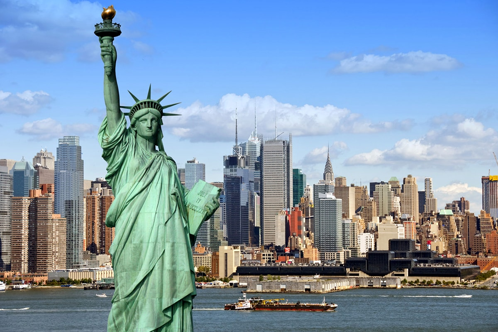

Нью-Йо́рк (англ. New York City, МФА: [nuːˈjɔɹk] ( прослухати) або The City of New York, дослівно — «Новий Йорк») — найбільше місто у США[10], розташоване на Атлантичному узбережжі біля гирла річки Гудзон. Населення — 8 175 133 особи (2010[11]), міської агломерації — 19 млн осіб. Оцінка населення на 2018 рік — 8,4 млн осіб[12]. Нью-Йорк — один із найбільших у світі торговельно-фінансових центрів (Нью-Йоркська фондова біржа, транснаціональні корпорації); великий промисловий центр (одяг, поліграфія, транспортні засоби, продукти харчування) США та Північної Америки; конгломератом портів Нью-Йорк сполучений системою каналів з Великими Озерами; великий транспортний вузол (авіатранспорт); численні вищі школи (Колумбійський університет); Метрополітен Опера; великі парки (Сентрал-парк); головна частина міста — Мангеттен; музеї, мистецькі галереї; пам'ятки архітектури XVII та XIX століть; численні хмарочоси, переважно на Мангеттені; багато пам'ятників (зокрема Т. Шевченкові в Арров-парку); Статуя Свободи. У Нью-Йорку розташовано штаб-квартиру ООН.
Нью-Йорк
Зміст
Назва
Альтернативна українська назва міста — Ню Йорк[14].
Історія
Італійський мореплавець Джованні да Верраццано (1485—1528) досяг затоки Нью-Йорк 1524 року, Генрі Гудзон досліджував його 1609 року. Місто засноване як торговельна факторія 1614 року голландцями. 1624 року голландці заснували поселення Мангеттен, від 1626 року — фортеця Новий Амстердам, центр голландської колонії Нові Нідерланди.
1664 року її захопили англійці, які не зустріли опору з боку губернатора Стаувесанта, після чого місто було перейменовано в Нью-Йорк (англ. Новий Йорк), на честь ініціатора захоплення — герцога Йоркського.
Під час війни за незалежність у 1776—1784 англійські війська окупували Нью-Йорк. У період 1785— 1789 років він був першою столицею США. Від кінця XVIII століття — важливий порт і осередок торгівлі, промисловості, фінансів, політичного та культурного життя країни. П'ять округів об'єднали 1898 року, і місто зайняло сьогоднішню територію.
Сучасність
1980-ті роки були періодом помірного зростання, що змінився великим бумом 1990-х років. Пом'якшення расової напруженості, значне падіння рівня злочинності, зростання імміграції оновили місто, і населення Нью-Йорка вперше в його історії перевищило 8 мільйонів осіб. Наприкінці 1990-х місто отримало багато переваг від успіхів індустрії фінансового сервісу в період буму «доткомів». Це стало одним з чинників зростання цін на нерухомість у місті.
Терористичні акти 11 вересня 2001 року торкнулися і столиці США міста Вашингтона, але Нью-Йорк постраждав найбільше внаслідок атак на Всесвітній торговий центр і щільний їдкий дим, який продовжував підніматися від його руїн впродовж декількох місяців після падіння «Веж-Близнюків» та пожежі. Попри це, розчищення епіцентру вибуху завершили швидше, ніж планувалося, і відтоді місто висунуло нові плани для зруйнованої території. Всесвітній торговий центр 1, який побудували на місці Всесвітнього торгового центру, також відомий як Вежа Свободи, став одним з найвищих хмарочосів у світі (1 776 футів або 532,8 м).
Географія
Місто Нью-Йорк розташоване при злитті річок Гудзон та Іст-Ривер і їх впадіння у затоку Нью-Йорк. Територія міста охоплює острів Мангеттен, острів Стейтен-Айленд, західну частину острова Лонг-Айленд, частину північноамериканського материка — Бронкс, і кілька невеликих островів у Нью-Йоркській гавані.
Місто складається з округів (боро):
- Бронкс (населення — 1 364 566 осіб)
- Бруклін (населення — 2 511 408 осіб)
- Мангеттен (населення — 1 606 275 осіб)
- Квінз (населення — 2 256 576 осіб)
- Стейтен-Айленд (населення — 475 014 осіб)
Найвища точка Нью-Йорка — пагорб Тодт-Гілл висотою 125 м, який знаходиться на Стейтен-Айленді.
Стейтен-Айленд — найбільш горбистий, просторий і найменш заселений район міста. У густонаселеному Мангеттені навпаки земля обмежена і дорога, що пояснює таку велику кількість висотних будівель і хмарочосів. Згідно з відомостями Бюро Перепису США, місто має площу 1214,4 км², з яких 785,6 км² — суходіл і 428,8 км² (35,31 %) — вода.
Згідно з останніми геологічними дослідженнями американських науковців, проведених 2008 року, за 40 кілометрів на північ від міста перетинаються два геологічні розломи, що робить імовірним землетрус магнітудою до 7 балів.
Причому місце перетину розташовується поруч з атомною електростанцією. Тому в майбутньому будуть розроблені додаткові заходи захисту будівель і атомної електростанції.
Клімат
Хоча місто Нью-Йорк розташоване на одній широті з Неаполем та Мадридом, воно має вологий континентальний клімат. Сезонні температури тут вищі, ніж на континенті Північної Америки, тому що Нью-Йорк розташований на узбережжі Атлантичного океану.
Узимку в Нью-Йорку випадає від 63,5 до 88,9 см снігу. Річний вільний від морозу період триває 220 днів. Температури навесні і восени помірні. Влітку погода дуже тепла і вогка. Температури вищі ніж 32 °C бувають 18-25 днів щороку. Існує довгостроковий кліматичний цикл в 70 років між теплими і холодними температурами.
Демографія
У минулому переважну більшість населення міста становили переселенці з Європи: в середині 19 століття — переважно ірландці і німці, до початку 20 століття — євреї та італійці. 1940 року приблизно 94 % населення неофіційної столиці США становили білі. Однак етнічний образ стрімко змінювався в міру переселення білих у передмістя. Це явище, що дістало назву «субурбанізація», вперше масово проявилося саме в Нью-Йорку. У межах міста тих, що виїхали, заміняли представники інших рас. За останні д есятиліття Нью-Йорк прийняв чимало вихідців з Азії, особливо китайців, індійців і пакистанців, а також уродженців з багатьох країн Латинської Америки і Карибського басейну.
Історія населення
У результаті потужного притоку імміграції Нью-Йорк одним з перших серед американських міст в середині 1980-х років втратив білу більшість і став вотчиною латиноамериканців і афроамериканців. Досі Річмонд — єдиний район з переважанням білого населення, територія міста вже давно являє собою мозаїку Гарлема, Маленької Італії, Чайна-тауна, єврейських «іст-сайдів», латинських кварталів тощо. Справжні масштаби переселенських процесів дозволяє оцінити єдиний у своєму роді Музей імміграції на Елліс-Айленді. Його засновано на місці, де до 1954 року був головний і сумно знаменитий пункт з прийому переселенців, через який пройшло понад 20 млн майбутніх громадян США.
Перепис 2010
Згідно з переписом 2010 року[11], у місті мешкали 8 175 133 особи в 3 109 784 домогосподарствах у складі 1 850 221 родини. Густота населення становила 6738 осіб/км². Було 3371062 помешкання (2778/км²).
Українсько-американська громада
У Нью-Йорку функціонують Український Інститут Америки (від 1948),
відділення Української вільної АН (від 1950), Шкільна Рада при УККА (від 1953),
Український Музей (від 1976), інші установи та організації іммігрантів з України.
20 грудня 1958 року в італійській кав'ярні «Павич» на Вест-стріт, 4 засновано
українську літературну організацію Нью-Йоркська група. В Арров-парку встановлено пам'ятник Тарасу Шевченку.
Українці Нью-Йорка
Бакович Петро — сотник Армії УНР i УГА, крайовий комендант УВО
Гайворонський Михайло Орест — головний капельмейстер Армії УНР (1920 р.), композитор, музикант, диригент, педагог, скрипаль, критик, громадський діяч.[23]
Ільницький Роман — громадсько-політичний діяч, заступник міністра народного господарства в УДП, голова Політради ОУНЗ.
Цісик Володимир — галицький український скрипаль-віртуоз, музичний діяч і педагог, професор; батько Марії та Квітки Цісик.
Економіка
Нью-Йорк — найважливіший економічний центр Сполучених Штатів і всього світу. Нью-Йорк, разом з Лондоном і Токіо, називають одним з трьох основних центрів світової економіки[24]. Валовий регіональний продукт міського регіону Нью-Йорка 2007 року становив $1 210 200 млн, що підняло його на перше місце серед метрополісів США[25].
Транспорт та інфраструктура
До громадського транспорту Нью-Йорка належать метро, автобуси, таксі, міський потяг Стейтен-Айленда, канатна дорога на острові Рузвельта, поїзд-Аероекспрес і пором на Стейтен-Айленд.
Майже всі з цих систем, а також приміські потяги та автобуси експлуатуються однією компанією (MTA) і мають єдину систему оплати проїзду за магнітними квитками (MTA metrocard).
На відміну від інших великих міст США, у Нью-Йорку громадський транспорт найпопулярніший спосіб пересування.